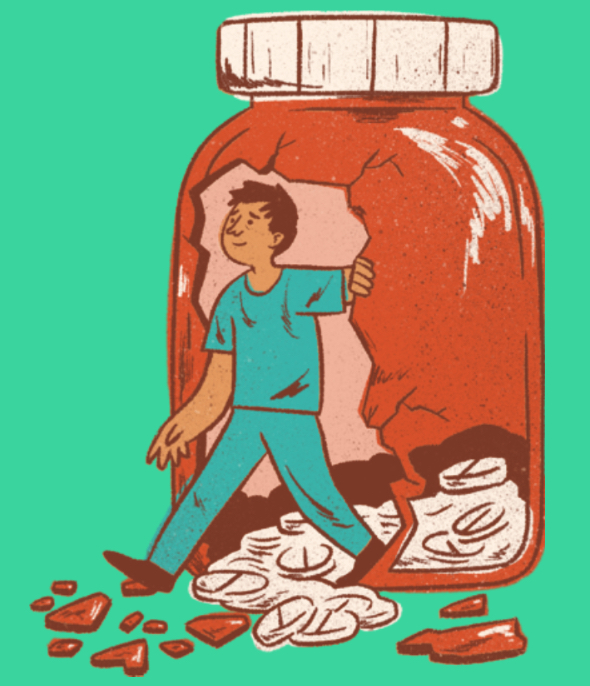
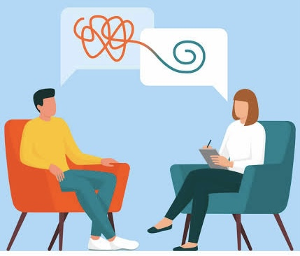

1.peer presure
Staying around our friend and close people abuse drug, give you pressure in using them as well. the reason on this is due to fill the attaction of using it and fill the same and equal in. ability.
2.availability od drugs
when drug as available, without an struggle, the user, try to used the chance and the availability.It is most because even after wanning the chance of using in sicrate in high.
3.self-medication
Due to same health isues,many people used the drug for madication without doctor prescription continuesly, which grew to addition and drug abuse.
4.Force by strengher or peer.
On the case of why do people abuse drags, the infographic above hightkey facter contribute to drug abuse.peer pressure been mention as the frequent cause for the drug abuse.From the user which are close friend or either nneighbour, this give the drug abuses fill of using it to create a competitive usage of drug, this dragging many people to abuse drugs.
effect of drugs abuse
1.addition
thus reffers to attraction of drug and luring of the abuser attetion to wards it, failing to met leads to altering of body effect as follow;
Hallusination.
and other listed below.
2.damage of organs or systems.
Idea continue use of drugs leads to damage orgains, like lungs when used ciggarate. Organ damage depend on the type of drug uses.
3. damage thinking skills
When drug get to the user body it will alster the normal function of the body, as well as the brain as the organ which contral the body function, bue to this reason the level of the thiking goes down and create a memory of the challenges face.
4. cause of diseases
different drug causes diffeent disease, this differ due to the consumption way and powerful it. for instance; elicit drinks cause stomach alcus.
5. abuse by the peer and strenghers
due to overwhemeing of drug which leads to staggering. most user lost the enerrgy and decide to a take a rest during the road at night, and might leads to abuse by the passagers. By stalling money phone or boby parts expecialy organ.
6. death
Drug abuse are have low life expectation, this differ fro virety of the birries and catastrophe finaly give up due to drukardness.Loss of live is high collaborate with the following elements; dipresssionna and axiety due to fail to met expectation like provinding to children or maintaining the living stardard, road accidents, it is mostly cause by the lost staggering after us3 of drug and most likely to not follow the road rule and eventual been heat by vihecle acidentaly.
7. poverty.
Failing to meet the task on the place of work oviusly is awarded will eleimination of this is like ly goin to undermine the uhser expenditure. In other case drugs can be addition and leading to low comitment to bissiness emergin to turndown and the journey op pocerty might start.Kn an extrime lebel, the user might decide to spend the saving and all the imcame to drug due to addition because of no other choosr. in all to curcamstance the poverty will rapidly increse and grew with a supersonic rate.

how to recure for drugs abuse
1. visit councillor of psycologist.
To overcome the adition and other effect of drug abuse, visit the nearest counciler of a psycologist, who will help in the steps, to recure. This will be in form of advice and user should be displine enough to follownthe instruction. viisiting a psycologist or a councillor is be apprivallge since the drug abuser will be guided on event our to sustain her/him self to remain focus.
2. visit reabilitation center
The is a free government facility, which aims to to shape the kenyan's live, in all aspect, including: behavious, drugs abuse and others. By visiting this sector the step will be taken softly with inclusion from differs. You will be able to leave drug abuse in a ease and painless way and forceless.

overcame drugs abuse
1. Abstain from availability of drugs
Abstain for drug abuse in a crucial method of overcaming drug effect, to abstain for drug abus here ar the key technique can be used for help, but as the audience you sholud be as responcible and displone to follow tha plan.
2. Avoid bad company of peer.
Compamy can be connection and essential in youth for the future live, but type of company determine by the purpose and the daily live of the company. Some of the company uses drug abuse and if you realize the lifestyle flee away for thr group and find other frinds and through that you willjave avoid ise fo drug abuse by companies.
3. focus to avoid idleness
Some of other causes of drug abuse is idleness with is davil's workshot, being idle can pull you towards us3 of drug abuse, and to avoid thus, keep focus all the time disphate that you don't have task, create a little task as posible to keep you fixed and focus.
4. stop using drug without doctor prescribtion
This technique is mostly tempting the sick individual or through other people, which can apen by giving out drug because you are sick, as youn used it the addition foundation is build and eventual ovewheming you. without doctor's prescribtion total dodn't used any other drug neither see the dictor.
5. Avoid strengher in sicrate places.sicrete place hasmalot of temptation, either siking or being force by any one else, when you are in public place the chances of being force is minimal because many people can see you and recure and siking as well. being force can be also freind or relative or trasted person like mentor, teacher or peer.